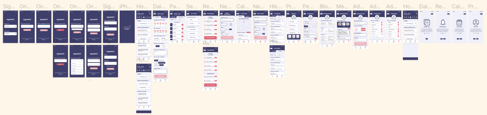
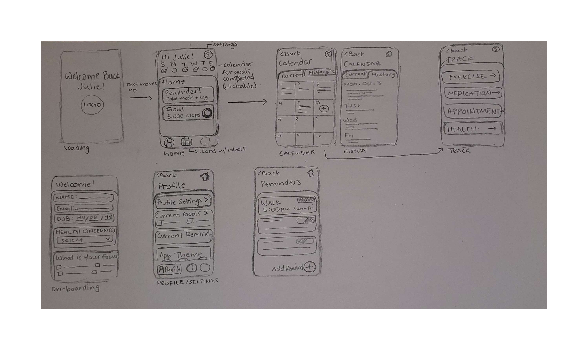

Project Analysis: AgeWell Healthcare App for Seniors
Overview: Ideated and prototyped an app for seniors aged 75 and older. This project was made
for us to demonstrate our ability to understand the needs of a user group, how to create and design interactions
as well as prototype a fully functioning app that takes all types of user flows into account. To create this app,
we had to do a lot of background research, user interviews and user testing to fully understand our target audience
and create an app that benefits their needs.
Website:
Roles:
- Ideation
- Research
- User Testing
- Wireframing
- Prototyping
- Visual Design
- Website
- Presentations
Team: Areeba Ali, Lauryn Yau, Karina Shuen
Scope: 7 weeks
Softwares: Figma, Protopie, WIX
Process:
- Research: We were assigned a user group of seniors aged 75+. We all did a lot of research on this user group to fully understand their needs and make sure our app was useful to them. The research I did included concerns that needed to be addressed for elders as well as interface designs that would be the easiest for them to navigate. Through this research, we each came up with 3 initial ideas.
- App Concept: After the first round of feedback, we narrowed down our ideas and picked the concept of creating a healthcare logging app for seniors. We each drew sketches for the UI of the app, and ended up choosing a mixture of all three sketches in the end. We developed a user persona through more research and created a style guide, which we checked in black and white for any contrast issues that could affect elders with poor vision.
- Iteration: the next round of feedback led us to refine our low-fidelity wireframes into more consistent, high-fidelity wireframes, and I experimented with the colour palette to find ones with better contrast and readability. We ended up picking one similar to our first iteration, except with bolder colours.
- Prototyping: The next step was to use our high-fidelity wireframes and turn them into working prototypes. To do so, we moved the wireframes over from Figma to ProtoPie. This step was done by all of the members of the group to create a fully functional prototype.
- User Testing: After the prototype was running, we moved on to user testing to find any bugs or anomalies within our design. We prompted 3 users, all over the age of 60, to test our app through a task, and later asked a set amount of interview questions.
- Refining: Through our interviews, we found that we had three main issues with our app: the onboarding was complicated, the homepage was too cluttered and the reminders were too repetitive. We solved these issues by simplifying the UI and making parts of the onboarding optional to allow an easy user experience.
- Final App: After implementing our final improvements, we created a website to showcase our product. Through this project, I learned how to conduct online interviews, use ProtoPie for prototyping, and work in a team seamlessly.


